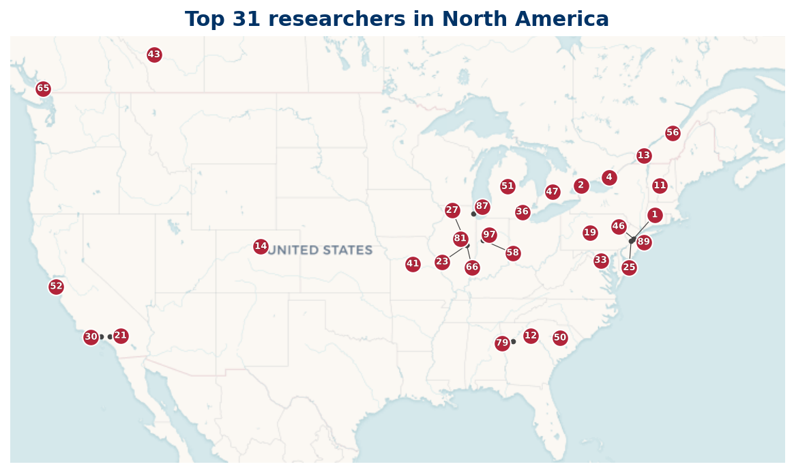

Listing
| Rank | Name | Institution | Country |
|---|---|---|---|
| 4 | Friedlander, John | University of Toronto | CA |
| 8 | Murty, M. Ram | Queen's University | CA |
| 11 | Paul Pollack | University of Georgia | US |
| 14 | Will Sawin | Princeton University | US |
| 16 | Mark Shusterman | University of Wisconsin-Madison | US |
| 21 | Pomerance, Carl | Dartmouth College | US |
| 22 | S.W. Drury | McGill University | CA |
| 25 | Elliott, P. D. T. A. | University of Colorado Boulder | US |
| 28 | Baker, R. C. | Brigham Young University | US |
| 30 | Goldston, D. A. | San Jose State University | US |
| 35 | Vaughan, R. C. | Pennsylvania State University | US |
| 41 | Ford, Kevin | University of Illinois Urbana-Champaign | US |
| 42 | Stephan Ramon Garcia | Pomona College | US |
| 45 | Granville, Andrew | Université de Montréal | CA |
| 46 | Diamond, H. | University of Illinois Urbana-Champaign | US |
| 49 | Tao, Terence | University of California, Los Angeles | US |
| 50 | Kowalski, Emmanuel | CCI Reprographics (United States) | US |
| 51 | Kátai, I. | Université Laval | CA |
| 53 | Kumchev, A. | Towson University | US |
| 55 | Bombieri, E. | Institute for Advanced Study | US |
| 59 | Montgomery, Hugh L. | University of Michigan | US |
| 60 | Cojocaru, Alina Carmen | University of Illinois Chicago | US |
| 69 | Liu, Jianya | Microsoft (United States) | US |
| 70 | Banks, William | University of Missouri | US |
| 72 | Williams, H. C. | University of Calgary | CA |
| 75 | Kontorovich, Alex V. | Rutgers, The State University of New Jersey | US |
| 76 | Stewart, Cameron L. | University of Waterloo | CA |
| 77 | Hildebrand, Adolf | University of Illinois Urbana-Champaign | US |
| 82 | Filaseta, Michael | University of South Carolina | US |
| 83 | Graham, S. | Central Michigan University | US |
| 84 | Soundararajan, K. | Stanford University | US |
| 88 | Alladi, Krishnaswami | University of Florida | US |